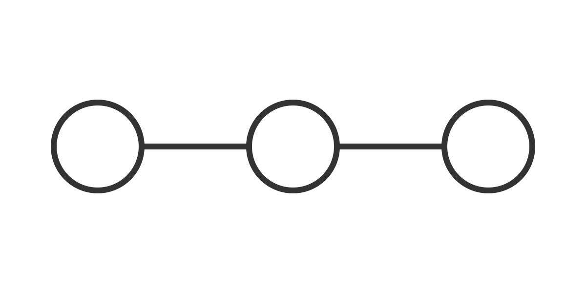

Fictional article typography
This authored HTML example uses native elements and shared theme tokens. It is not evidence of browser, print or assistive-technology verification.
Text can contain emphasis, context, inline demo <tag> and an internal link to the sample list.
Sample list
- First fictional observation.
- Second fictional observation.
- A nested step.
- Another nested step.
Quoted context
This quotation is invented to demonstrate native blockquote markup.
It is not a statement by a real person.
Literal code
Code remains text. Long lines wrap without adding a scrolling keyboard target or changing the source text.
fictional <seedling> & notes
demo/example/with/a/deliberately/long/unbroken/reference/for/checking/wrapping/without/introducing/a/horizontal/scroll/region
Simple table
A native text table keeps its caption and header relationships while long cell text can wrap.
| Specimen | Illustrative note |
|---|---|
| Sample A | fictional_reference_with_no_spaces_for_checking_narrow_article_table_wrapping |
| Sample B | Literal code: demo <tag>. All observations are invented. |
Local images

The same diagram at a small authored size:
Limits
CSS does not sanitize HTML or validate links. Authors own the content, heading hierarchy and safe URLs. This example uses no scripts or remote assets.